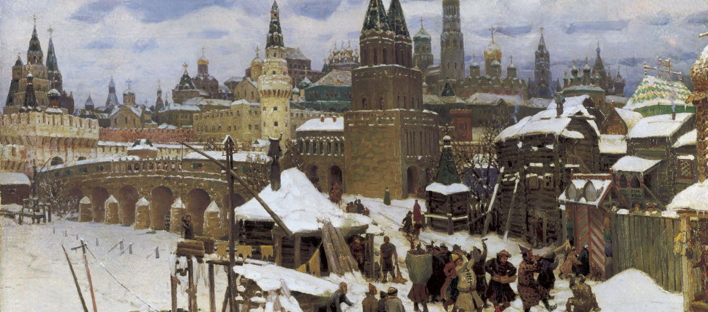
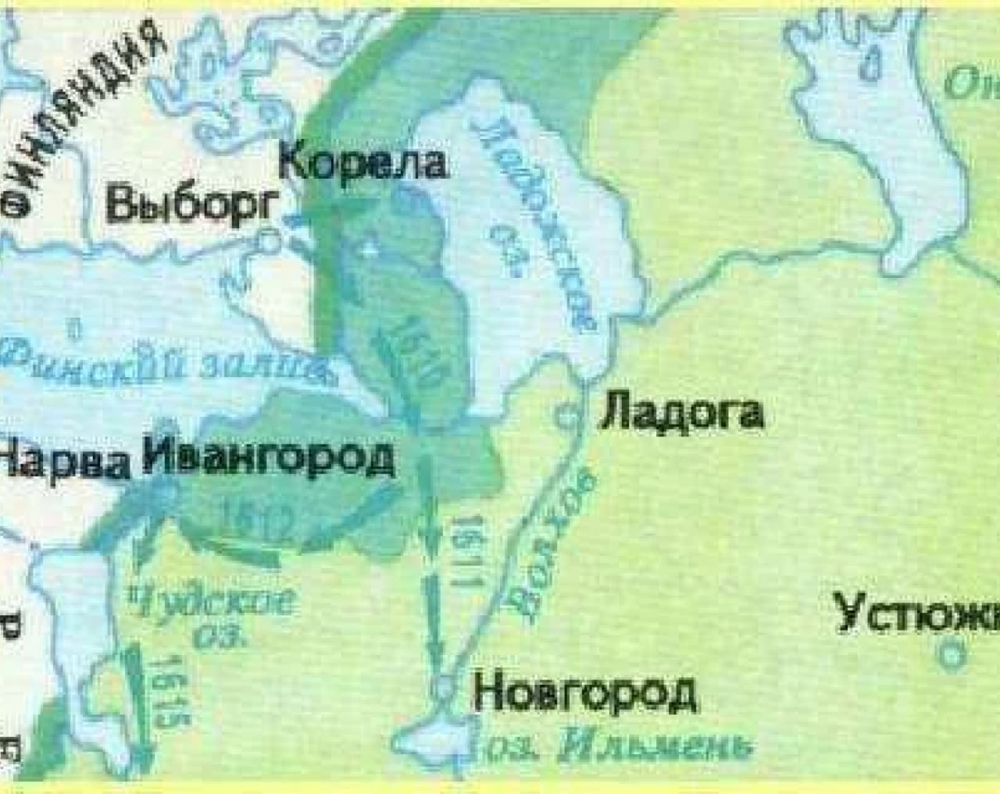
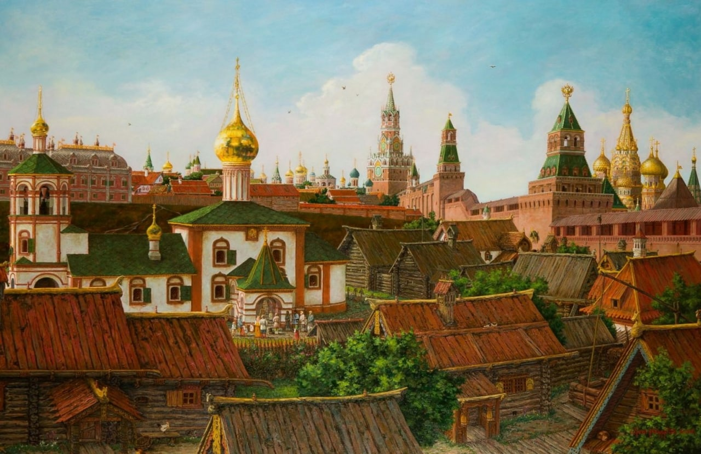

Внешняя политика
Основной задачей внешней политики Михаила Федоровича стало возвращение земель, утерянных во время Смуты и интервенции.

Столбовский мир:
Для того, чтобы начать войну со Швецией, которая заняла несколько захваченных ею городов, требовались деньги и армия. Россия же находилась в упадке после Смуты и не могла вступить в полноценную войну. Попытки силой выбить шведов из захваченных городов оказались неудачными.
Шведский король так же, как и Михаил Федорович, не желал войны, поэтому обратился к английскому монарху Якову I, чтобы тот стал посредником между Россией и Швецией. Король Англии согласился помочь и рассчитывал в благодарность за свою помощь заключить выгодный торговый договор с Россией.

27 февраля 1617 года состоялось подписание Столбовского мира. Согласно договору: 1. Россия уступала Швеции Ивангород, Ям, Копорье, Орешек, Корелу и обязывалась выплатить 20 тыс. руб. 2. Швеция возвращала России Новгород, Порхов, Старую Руссу, Ладогу и Сумерскую волость. 3. Англия укрепила торговые позиции в России (хотя и не в той степени, в какой намеревалась). По условиям мира Россия потеряла выход к морю, но некоторыми территориями пришлось пожертвовать ради восстановления хозяйства и общего благосостояния страны.
Деулинское перемирие:
В 1616 году королевич Владислав напомнил об избрании его на русский престол с помощью окружной грамоты, адресованной всем русским людям. В грамоте королевич заявлял, что повзрослел и теперь готов «добывать себе царство».
Попытки Владислава занять русский престол могли дестабилизировать положение в стране, которая только восстановилась после Смуты. Русский народ уже почувствовал на себе все тяготы польской интервенции и поддерживал царя. Решение «без всякого сумнения», не щадя жизни, стоять за царя Михаила Федоровича приняли и бояре на земском соборе 9 сентября 1618 года. Москва была достаточно сильна, чтобы не допустить нападения Владислава.
1 декабря 1618 года было подписано Деулинское перемирие между Россией и Речью Посполитой. Оно заключалось на 14 лет и 6 месяцев. По условиям мира Россия отстояла свою независимость, а королевич Владислав отказывался от престола. Однако ради сохранения престола за Михаилом Романовым России пришлось пожертвовать Чернигово-Северскими землями и Смоленском.
Смоленская война 1632 – 1634 гг.
К 1632 году истек срок Деулинского перемирия. В Польше умер король Сигизмунд III, началась подготовка к выбору нового монарха. В России решили, что время внутриполитической борьбы, когда Польша ослаблена, будет подходящим для развязывания войны. Земский собор постановил начать военные действия. Целью России в этой войне стало возвращение городов, утерянных в ходе Смуты, а также земель, переданных Польше по условиям Деулинского перемирия.
В начале войны, в 1633 году, русские войска штурмовали Полоцк. Взять город небольшому войску не удалось, но русские войска в течение трех дней находились в городе, вернулись с захваченными пленными, добычей и знаменами противников. Основными военными силами командовал воевода Михаил Борисович Шеин и окольничий Артемий Измайлов. Их задачей стало взятие Смоленска. На первом этапе военные действия шли успешно: после восьмимесячной осады Шеину почти удалось взять Смоленск, однако в августе 1633 года к городу подошли войска Владислава. Теперь русская армия оказалась в окружении. Поляки умело распускали слух о движении значительных крымских отрядов в Россию. Эти известия подрывали и без того слабый боевой дух армии, многие солдаты бежали на родину, стремясь защитить свою страну и свои семьи. Желая спасти остатки войск, М.Б.Шеин капитулировал. Взамен на возможность увести войска, воевод воевода отдал противнику знамя и артиллерию.
В октябре 1633 года умер патриарх Филарет, который фактически правил государством. Новым патриархом стал Иосиф, до этого бывший епископом в Пскове. Смертью Филарета воспользовались те, кого он отстранил от власти – Салтыковы. Эта влиятельная семья давно стремилась свести счеты с талантливым, но надменным воеводой М.Б. Шеиным. Теперь, с поражением М.Б. Шеина, у Салтыковых появился повод устранить воеводу от дел: М.Б. Шеин не только лишился покровительства Филарета, но и потерпел поражение в осаде Смоленска. В апреле 1634 года М.Б. Шеин и А.В. Измайлов были приговорены к смертной казни за «измену».
В ходе войны состоялись и другие сражения: в 1633 г. – оборона Путивля от поляков, которая завершилась победой русских войск; 1634 г. – успешная оборона русскими войсками крпепости Белая.
Азовские сидения:
Регулярные набеги крымских войск заставляли правительство России задумываться о строительстве оборонительных укреплений. Продолжала развиваться засечная черта, строительство которой началось еще в XIII веке: были построены города Тамбов (1635 г.) и Козлов (1636 г.), и множество небольших городков и крепостей, которые соединялись с помощью валов, рвов и засек.
В 1637 году донские казаки захватили Азов. Казаки действовали не по приказу из столицы, а на свой страх и риск, и Москва узнала о захвате города уже после того, как Азов был взят. Царь упрекнул казаков в самоуправстве, однако отдал приказ не сдавать крепость.
На момент захвата Азова казаками правителем Османской Империи был Ибрагим I (1640-1648 гг.). В 1641 году началась осада Азова турецкими войсками и флотом. Турки использовали артиллерию и создавали подкопы, но крепость взять им не удавалось. Крепость была разрушена, однако казакам удалось отстоять ее и снять осаду. Царь поблагодарил казаков за проявленное мужество, и те попросили Михаила Романова принять Азов под свою власть. Это действие означало бы затяжную войну с Османской Империей.
По решению Земского собора в январе 1642 года решено было не развязывать войну. Сторонниками военных действий оказались только воеводы, а купцы и посадские люди высказались против войны. После Земского Собора в Москву для переговоров прибыл турецкий посол.
В апреле 1642 года царь отдал казакам приказ оставить Азов и вернуться на Дон. Казаки подчинились. Через год в Турцию в качестве посла отправился Илья Данилович Милославский. Ему предстояло примирить казаков со сдачей города и заключить договор с Турцией. Казаки получили 20 000 рублей и провизию в качестве царского пожалования, а в Турцию отправили письмо, в котором царь соглашался наказать казаков, если Турция этого захочет.
